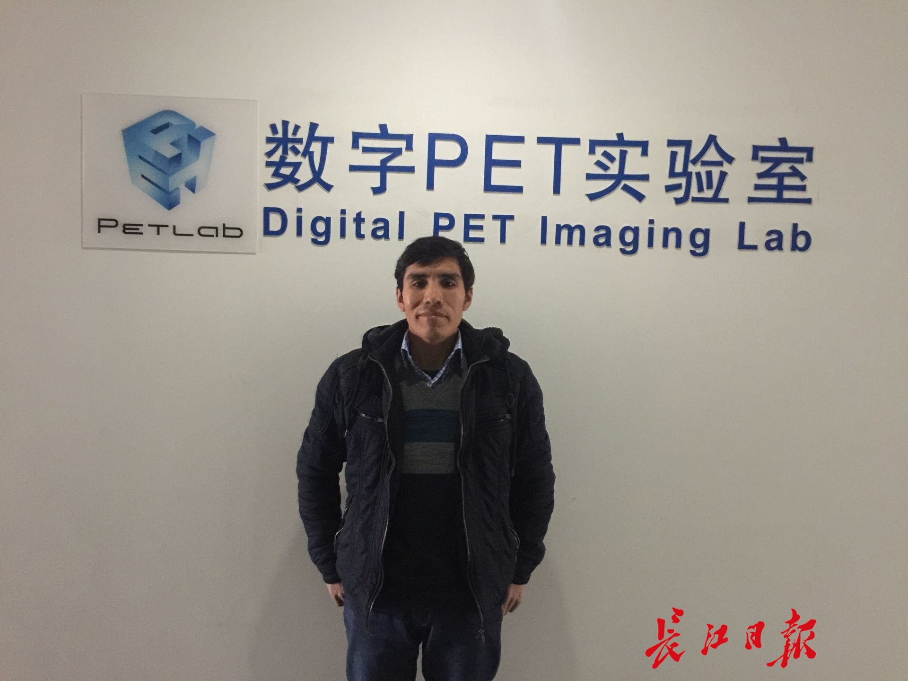

春节不回家，秘鲁学霸在汉吃了顿丰盛年饭
长江日报融媒体2月16日讯(记者李佳 通讯员杨亚)16日中午,在食堂解决中饭后,华中科技大学数字PET实验室留学生许格,又扎进了实验室。
许格(Hugo Pumacahua Chahuayo)来自遥远的南美洲国家秘鲁,他是土著印第安人,今年43岁。来武汉之前,他是秘鲁的一名工程师,专门负责医院一些大型医疗设备的维修工作。8年前,许格申请到奖学金,来到华中科技大学生物医学工程专业读研,2015年进入华中科技大学数字PET实验室攻读博士学位,师从谢庆国教授。
PET是继X线机、CT、MRI之后,当今世界最先进的医学影像技术之一,在肿瘤、神经系统疾病和心血管系统疾病的早期诊断和疗效评估上具有不可替代的优势,2010年,谢庆国研制出世界上首台全数字PET,突破了传统PET仪器受制于模拟电路的瓶颈;2015年,又研发成功首台人体临床全数字PET,可更早发现肿瘤等重大疾病。
许格说,像PET这样的大型医疗设备,涉及电子学、机械学、光学等十多个学科,既充满挑战又非常有趣,在这个领域的研究时间越长,越会深深着迷。而他以前都是进行工程维修之类的工作,在数字PET实验室的研究,让他有机会成为PET仪器的设计者、发明者、创造者,这正是他的梦想和志向所在。尽管大多数同学都回家了,但他会一直坚守实验室,利用这个长假潜心完成谢教授布置给他的重要任务——闪烁脉冲能量信息获取方法研究,这是数字PET的一项核心技术。
目前,许格所在的团队,将首台临床全数字PET装机调试优化后,已经顺利拍出全球首张数字PET人体图像,能清晰显示大脑的沟回层次、脊柱分辨、大腿骨皮质等状况。就在上月,临床全数字PET通过国家食品药品监督管理总局关于国家创新医疗器械的特别审批,目前正在临床试验阶段,一旦通过CFDA认证,获得医疗器械注册证,即可走向市场。
许格说,他所在的数字PET实验室,拥有全球领跑技术,这里就像一块巨大的磁铁,截至目前,已有来自意大利、俄罗斯、德国、秘鲁、阿拉伯等国的多位海外人才加盟,团队的俄籍教授瓦列里和意籍教授尼古拉都是相关领域的顶尖人才。
望着空荡荡的校园,许格说偶尔也会想家,他在秘鲁中部山地高原区的家,家境并不宽裕,在汉深造期间,奖学金够一年回家两次。但在中国,他结交了许多朋友,几天前还去了武汉的朋友家做了客,和中国同学们一起吃了一顿丰盛的年饭,提前庆祝春节。